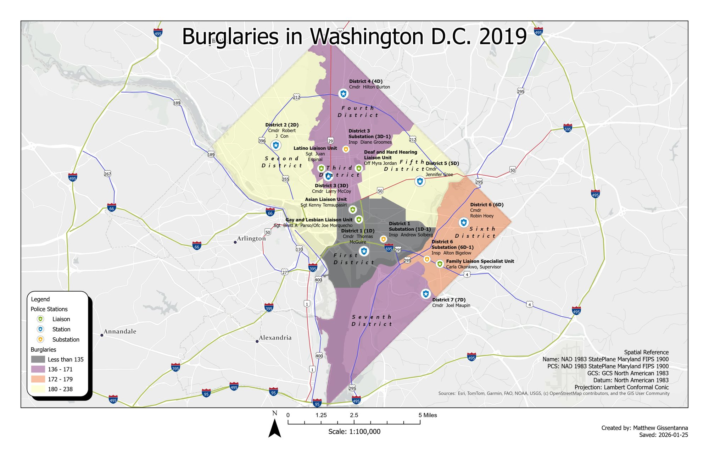

Washington D.C. Burglary Mapping
DCCR-2026-01 · Delivered

Overview
A crime-mapping exercise classing 2019 burglary counts across the seven MPD police districts of Washington, D.C. with a sequential color scheme, layered over a point symbology that distinguishes stations, substations, and specialized liaison units (commanding officers labeled). Drawn in NAD 1983 State Plane Maryland on a Lambert Conformal Conic projection.
Processing
SoftwareArcGIS Pro
Coordinate Reference Systems
- Horizontal
- NAD83 StatePlane Maryland FIPS 1900 (Lambert Conformal Conic)
Methods
- Classed choropleth of burglary counts by police district
- Layered point symbology: stations, substations, liaison units
- Figure-ground separation against a muted basemap
- Layout with legend, scale bar, and source attribution
Deliverables
- Crime choropleth map (PDF)
Key Technical Challenge
Balancing a district choropleth against dense point symbology and labels without overwhelming the reader.